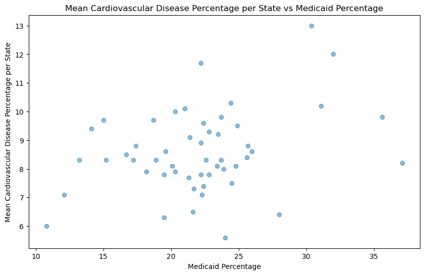

Introduction
- Investigate predictability of chronic condition prevalence between public and private insurances.
- Discover differences (if any) between access of care and insurance type.
Background
As for insurance’s impact on health, measuring it becomes tricky in the United States. Surprisingly, the U.S. is the only high-income country to not offer health coverage to all citizens.⁵ Instead, both private and social healthcare co-exist, where social healthcare is not available to everyone. Social healthcare in the US is available to those who are disabled or over 65 years old through Medicare. Medicare is not always free, but generally more affordable than private health insurance. Low income Americans can also receive free social healthcare through Medicaid. Social healthcare is funded through both federal and state health expenditures. In our reseach, we focused on just Medicaid in order to better serve our low-income and traditionally marginalized communities.
At the global level, there is a direct link between health insurance type and the health quality of individuals, where countries with universal public health insurance are healthier.⁴ However, within just the United States, there is no correlation between Medicaid spending and disease rate.⁸ We intend to investigate this relationship by discovering chronic disease trends by insurance type. Since we can expect access to preventative care to be limited for those on public health insurance in the United States and know preventative care improves health outcomes, we hypothesize that reduced access to preventative care and higher rates of chronic conditions will exist together.
We recognize we cannot make a causal claim from this data; we can’t answer the question on if reduced access to care causes increased disease rates. This is due to the fact that having low income may just as likely result in a cycle between decreased access to care and higher disease rates. Instead of attempting to find the causal agent in this cycle, we instead aim to provide knowledge and resources for those who have found themselves in such a situation.
Methods
Predicting disease prevalence by insurance type
- Manipulate data to find mean prevalence of the disease by state. Use this state-wide data rather than the county data as the Medicaid covariates were only available by state.
- Preprocess, split, and model the data as fully outlined in Goal 3.
Detecting differences in access to care by insruance type
Need to fill out. Use R or Python?
We also predicted the prevalence of common chronic conditions, such as Diabetes, within each state based on the percentage of people on Medicaid.
Goal 1: Predicting Chronic Conditions Based On Insurance Type
To answer the question of how state insurance in particular impacts one’s health status, we evaluated two common chronic conditions in the United States, diabetes and cardiovascular disease.
Diabetes
Public Insurance
We immediately plotted our mean diabetes percentages by Medicaid percentage across states to see if any obvious correlation existed (see Figure 5A). No correlation was obvious, but there appeared to be a slight linear trend. We created a logisitic regression model predicting quartile of diabetes prevalence by many Medicaid-related covariates, such as how many adults did not see a doctor in the past twelve months due to cost, state Medicaid expenditure, state Medicaid spending, total Medicaid spending, and population percentage on Medicaid. Our simple model showed a surprising 54% accuracy in predicting how many people in a given population would have diabetes based on these factors. We had a small dataset, however, so cross validation showed our accuracy to be 38% with a standard deviation of 20%. While Medicaid-related factors may not be able to completely predict diabetes prevalence, it certainly is correlated.

Private Insurance
In contrast, the same plot with private insurance percentages shows a negative trend (see Figure 5B).

We made another logisitic regression model with just diabetes prevalance and percent private insurance per state with only 23% accuracy. Though this is lower than the above-mentioned public insurance data, it is important to note that we are using only one predictor in this model- percent of privately insured individuals. In the above model, we used all Medicaid-related variables (thirteen total predictors). Again, this shows that a correlation exists between the type of insurance and diabetes prevalence.
Cardiovascular Disease (CVD)
Public Insurance
As with our diabetes dataset, we again repeated the above process to predict CVD prevalence based on Medicaid-only related factors. Our simple scatterplot shows a faint linear trend. Our model accurately predicted CVD prevalence only 15% of the time- though this can possibly be explained by our small dataset. Cross validation testing revealed an accuracy of 41% with a standard deviation of 25%. Though not as obvious as with our diabetes data, there may be some correlation between only Medicaid-related factors and cardiovascular disease.

Private Insurance
Turning once again to our privately insured individuals, a similar model accurately prediced CVD prevalence only 15% of the time. The same problems as before apply; our dataset had few data points to truly train, and we are again only using one predictor (percent of private insurance per state) rather than thirteen from our public insurance models. The fact that our one predictor can produce an accuracy equal to the publicly insured model suggests that there may be some correlation between insurance type and chronic disease prevalence.

Goal 2: Detecting differences in access to care by insurance type
FILL IN